“Игра -
дело серьезное”Л.Н. Толстой
Почему настольные игры — это
зеркало времени?
Когда мы открываем настольную игру, чаще всего ищем отдых, веселье, разговор. Но иногда, не осознавая, прикасаемся к чему-то гораздо большему — к отпечатку времени, к мыслям общества, к тому, что волновало людей сто, двести, триста лет назад.
Настольные игры кажутся простыми: поле, фишки, правила. Но если присмотреться, в них прячется гораздо больше. Они рассказывают о том, как мы мыслим, с кем хотим быть рядом, во что верим, чего боимся, и чему хотим научиться. Через игру — к культуре. Через механику — к идее. Через коробку — к эпохе.
О чём этот лонгрид — и почему он особенный?
Этот материал — не список «10 советских игр» и не подборка для уютных вечеров. Это путешествие во времени, в котором игры становятся проводниками. Вы пройдёте по ключевым эпохам российской истории — от первых морализаторских забав дворянства до фестивалей современных настольных культур. Вы увидите, как игры рождались в имениях, печатались в пропагандистских типографиях, скрывались в комодах перестройки и в итоге переросли в индустрию и форму жизни. Это взгляд на настольные игры не как на развлечение, а как на социальное зеркало, через которое можно увидеть прошлое — и чуть-чуть себя..
Что вас ждёт внутри?
Этот лонгрид устроен как хорошо собранная игра: каждая секция — отдельный этап, каждый факт — как фишка, которую стоит рассмотреть.
А с чего всё началось?
Игры существовали в России задолго до XVII века.
Шахматы — не позднее IX столетия, нарды и костяшки — ещё раньше.
Играли в примитивные счётные игры, часто с языческими корнями. Но
таких игр было немного, и чаще они были либо элитарными, либо
устными и неформализованными, либо не настольными в современном
смысле — без печатного поля, компонентов, массового доступа. С XVIII
века всё меняется. В России повсеместно играют в карты, за ними —
европейские печатные игры. Появляется культура досуга, тираж,
правила, моральные смыслы. Именно с этого момента игра становится
предметом, который можно положить на стол, передать, обсудить,
купить, воспитать через него. Поэтому мы начинаем с этой эпохи. Не
потому что раньше игр не было — а потому что именно отсюда
начинается история настольных игр как культурного явления в России.
Где у игр появляется своя формула, целевая аудитория и миссия.
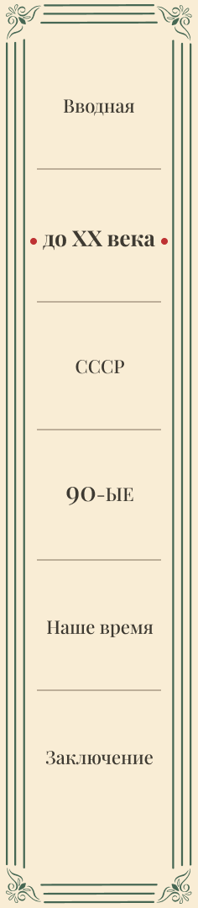
До XX века (1700–1900 годы)
В России настольные игры начали распространяться еще в эпоху Петра Великого и его наследников. Первыми пришли игральные карты, завезенные из Европы в XVII веке. Азартные и карточные игры прочно обосновались во всех слоях общества – от аристократических карточных салонов при дворцах до трактиров и купеческих гостиных. Игроки осваивали европейские пасьянсы, фанфары, вист и другие карточные развлечения. В дворянской среде складывался особый ритуал карточных вечеров, где удача и блеф переплетались с беседой. Карты постепенно из запретного плода превратились в обыденный атрибут досуга русской знати и интеллигенции.
Параллельно с картами в Россию проникали и европейские настольные игры
Хлопковый носовой платок
с рисунком игрового поля “Game of
Goose”
Англия, 1794
просветительно-развлекательного характера. В XVIII–XIX веках по всей
Европе были популярны моральные и образовательные игры на картоне:
участники бросали кости и перемещали фишки по размеченному полю,
соревнуясь в достижении цели. Самой известной была игра в гусёк
(Game of the Goose), где ход игры символизировал путешествие с
препятствиями.
Эту простую забаву быстро переняли и в
России – причём у нас к бросанию костей относились гораздо
спокойнее, чем в пуританской Англии, где кубики осуждались за связь
с азартом. Правила «Игры в гусёк» были предельно незатейливы: ходи
по кругу на число шагов, выпавшее на костях, и надейся на удачу.
Побеждал тот, кто первым доходил до финального поля.
Первый «Гусёк» на русском языке был издан в 1792 году в типографии
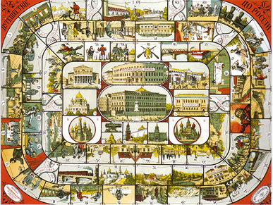
А. Решетникова. Позже на основе «Гуська»
появилось множество игр, в которых при перемещении фишек участники
преодолевали препятствия. Ярким примером является дореволюционная
игра «Путешествие по России», где фишка-локомотив передвигалась от
станции к станции.
Путешествие по России, 1885 г.
Однако настольные игры служили не только забавой, но и образованием. Просвещенная элита быстро оценила их педагогический потенциал: интерактивность и наглядность позволяли превращать игру в науку, преподанную играючи.Многие дворянские дети обучались дома, под руководством гувернеров и гувернанток – и те активно использовали настольные пособия в воспитательных целях. Впервые в 1790-е годы граф Фёдор Ангальт, возглавлявший кадетский корпус, предложил изучать историю через игру. Он писал методики, как превратить исторические сведения в викторину или карточную забаву. В 1795 году педагог Михаил Брешковский перевёл на русский язык обширную немецкую «Историческую игру для детей» Марии Шмальц. Эта игра подавала историю России в форме вопросов и ответов, фактически будучи настольной викториной по важнейшим событиям. Позже, в XIX веке, вышел целый ряд отечественных обучающих игр: «Атеней русской истории» (1844) с 159 вопросами по истории, «Новейшая географико-историческая игра» (1824), «Естественно-историческое лото» (1897) и другие. Они охватывали разные области знаний – от истории и географии до основ естествознания. Их покупали для детей аристократии и интеллигенции: играть в познавательную игру считалось полезным досугом, развивающим ум.
Особое место занимали военно-патриотические игры. Издатели создавали игры, имитирующие сражения и походы. Уже с 1830-х годов в обиход вошли так называемые картонные военные игры: на листе картона печаталась карта поля боя с разметкой для передвижения отрядов. Фишками служили картонные солдатики или кораблики, которые нужно было вырезать и устанавливать на подставки. Игроки бросали кубик и передвигали свои «войска», стараясь захватить позиции противника. Например, большой популярностью пользовалась игра «Штурм Измаила», реконструировавшая известную победу русской армии над турками. А в 1856 году появилось «Большое военное лото» – на карте-Крыме нужно было посредством вытягивания нумерованных бочонков «захватывать» города, отмеченные цветами воюющих сторон. Это считалось одновременно развлечением и патриотическим времяпрепровождением, особенно после победоносных войн.
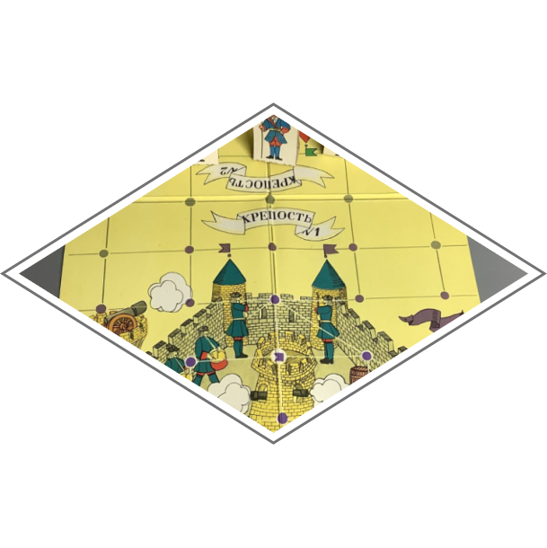
Штурм Измаила, 1835 г.
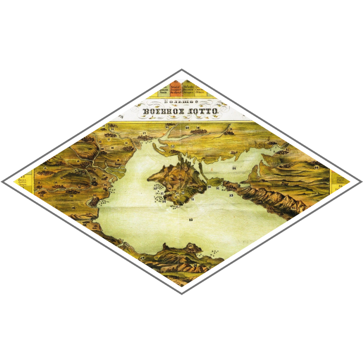
Большое военное лото , 1856
Наконец, нельзя не упомянуть шахматы, которые в XIX веке получили второе рождение как интеллектуальное хобби. Шахматная игра, известная в России с древних времён, в 1800-х годах пережила всплеск массового интереса: проводились первые шахматные турниры, издавались учебники, при клубах знати создавались шахматные общества. Логика шахмат и шашек вдохновляла и новые изобретения. Появлялись оригинальные русские игры по их мотивам – например, «Волки-овцы», «Осада». Эти игры зачастую оформляли под реальные исторические события – например, выпуск «Осады» мог посвящаться обороне Севастополя или штурму Плевны, хотя механика при этом не менялась.
В начале XIX века родилась легендарная игра Kriegsspiel – прообраз современных военно-тактических варгеймов. Её автор, стремился максимально правдоподобно моделировать боевые действия на столе. Их правила вводили разные типы войск, учитывали ландшафт и вероятности попадания – одним словом, это была сложная система, ближе к учебному пособию для офицеров, чем к игре на досуге. Рейсвиц добился такой популярности своего Kriegsspiel при дворе прусского короля, что был приглашён в Россию представить игру наследнику престола. Великий князь Николай Александрович (будущий император Николай I) лично ознакомился с новинкой, и при его содействии Kriegsspiel вошёл в программу подготовки русских офицеров. В царской армии настольную симуляцию боя ценили всерьёз.
Таким образом, уже к концу XIX века настольные игры в России отразили разные стороны жизни общества: простые азартные забавы для широкой публики, изящные головоломки и викторины для воспитания детей, патриотические игры о войнах и даже научные симуляции для военных. Появилась и своя индустрия: литографские мастерские в крупных городах наладили выпуск красочных игр на картоне, зачастую достигавших уровня небольших произведений искусства. Настольная игра перестали быть редкостью или диковиной – она прочно вошла в досуг образованных россиян.
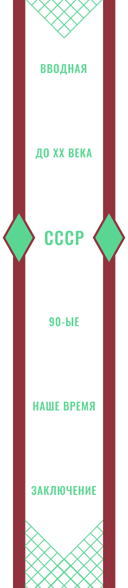
1900–1980 гг.: настольная игра в СССР — воспитание,
пропаганда и досуг
В начале XX века, вплоть до революции, российская настольная культура оставалась частью общеевропейской. Выпускались новые лото, шахматы, детские игры по мотивам сказок и приключений. Но перелом наступил после 1917 года. Советская власть принесла радикальные изменения во всё – в том числе и в настольные игры. Если раньше игры были просто развлечением или образованием, то теперь им предстояло служить делу воспитания “нового человека” – строителя социализма. Советское государство стремилось к идеологической самодостаточности во всём, особенно в продукции для детей и молодёжи. Книги, фильмы, игрушки – всё стало инструментом пропаганды правильных ценностей. Настольные игры не стали исключением, их тоже взяли на вооружение как наглядное пособие новой эпохи. В 1920-е – 1930-е годы мейнстрим настольных игр в СССР был пронизан идеологией и агитацией. Главной целевой аудиторией стали дети и подростки, ведь именно им предстояло воплотить коммунистические идеалы в будущем. Настольная игра превратилась в способ незаметно обучать подрастающее поколение нужным навыкам и взглядам, замаскировав это под развлечение.
Хрестоматийным примером такой игры считается «Электрификация» (опубликована в 1928 году в приложении к детской газете «Ленинские внучата»). Сюжет отражал грандиозный план ГОЭЛРО – электрификацию всей страны. Веселья здесь было немного, зато педагогики – с избытком.
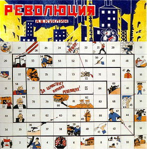
В том же духе создавалось множество других настольных игр первой советской декады. Классическая «игра в гусек» получила десятки новых тематических вариаций: клетки игрового поля наполнились не гусями, а фабриками, тракторами, красноармейцами и пионерами. Например, игра «Дадим сырье заводам» (1930) предлагала юным игрокам собирать и сдавать на переработку макулатуру, металлолом и прочие ценные отходы для промышленности. Игра «Революция» (1925), по которой рабочие шествуют к торжеству коммунизма.
Революция, 1925 г.
Были игры про индустриализацию: известна, к примеру, «Пятилетка», вышедшая в разгар первого пятилетнего плана. Похожий проект – игра «Путь к коммунизму», где необходимо было пройти через этапы социалистического строительства к светлому будущему. Тематика освоения страны также проявилась в игре «Перелёт Москва–Пекин»: игроки как бы прокладывали маршрут авиационного рекорда, демонстрируя достижения советской авиации. Все эти игры по сути оставались примитивными «бродилками» в духе гуська – брось кубик, иди вперёд, выполняй указание на клетке. Но их визуальный строй был совершенно новым: вместо нейтральных сказочных персонажей или абстрактных лошадок на поле красовались красные звёзды, комсомольцы, строящие Днепрогэс, пионеры с горнами и рабочие у доменных печей. Художественное оформление часто делалось известными иллюстраторами в стиле агитационного плаката – яркие краски, лаконичные подписи, динамичные композиции. На некоторых полях рядом с картинками печатали пояснительные подписи или лозунги, напоминая игрокам о правилах гигиены, труда или поведения.
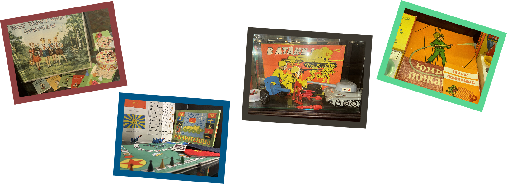
Конечно, не все советские настолки 20–30-х были скучными ходилками. Сохранялась и традиция варгеймов – серьёзных военных игр для подготовки и самообразования взрослых. Так, ветеран Гражданской войны Константин Самойлов в 1926 году выпустил подробные правила игры «Морской бой». Название обманчиво: это была не детская игра со шпильками на тетрадном листе, а сложнейшая модель морской войны. Параллельно выходили и гибридные проекты: настольные игры на военную тему, ориентированные на массового игрока, но позаимствовавшие элементы сложных варгеймов. Тем не менее все эти комплексные игры оставались в меньшинстве. Во-первых, они были дорогие в производстве (требовались фигурки, большие карты, книжечки правил). Во-вторых, широким массам труднее их воспринимать – куда проще бросать кубик да шагать фишкой. Да и идеологическая отдача от простой игры-гусека для детей была куда выше, чем от замысловатой стратегии для избранных офицеров. Поэтому государство делало упор на простые и массовые игры.
Стоит отметить, что в 1920–30-е годы шахматы достигли пика популярности в СССР и фактически вытеснили все другие интеллектуальные игры для взрослых. Шахматные чемпионы становились героями, их победы рассматривались через призму борьбы систем – особенно легендарный матч Спасский vs Фишер 1972 года разжёг интерес к шахматам как к символу интеллектуального превосходства социализма. В такой атмосфере другие сложные настолки, вроде военных игр, не могли претендовать на широкое признание – шахматы царили безраздельно, поддерживаемые государством. А вот для семейного и детского досуга параллельно развивались свои, более простые развлечения. После Великой Отечественной войны тематика настольных игр постепенно смягчается, отходит от прямой пропаганды. Идеологический накал уже не столь высок – страна вошла в период стабильности, и население нужно было не столько воспитывать, сколько развлекать. Люди пожелали тихого семейного досуга – и настольные игры для детей прекрасно подошли на эту роль. В 1950–60-е в СССР выходит множество детских игр яркого оформления. Это часто всё те же ходилки, лото, викторины, но выполненные с фантазией: с красочными рисунками, фигурками, иногда добавлялись стишки, загадки, подвижные элементы. Акцент сместился на развлечение и развитие моторики, внимания, смекалки. Темы, правда, оставались в русле советской жизни: игры про космос, целину, пионерские будни, спорт. Но они скорее нейтральные по идеологии и рассчитаны на весёлое времяпровождение.
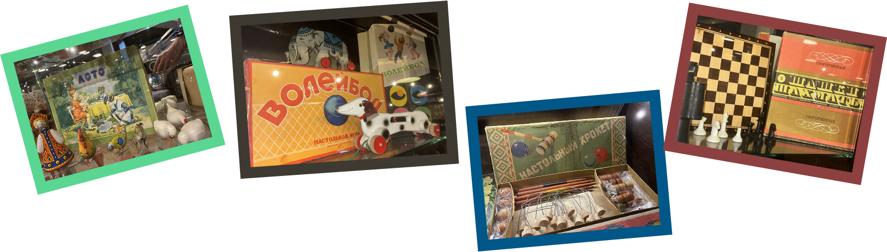
Интересная черта этого периода – взаимопроникновение с зарубежными играми. Железный занавес хоть и ограничивал культурный обмен, но полностью не препятствовал ему. В 1970-е годы в СССР начинают выходить локализованные версии популярных западных настолок. Например, в 1975 году была официально издана игра «Скраббл» под адаптированным названием «Эрудит». Это легендарная игра в составление слов из букв – советская версия быстро стала хитом для любителей словесности. В целом в позднем СССР иностранные настолки проникали ограниченно и выборочно – только те, что считались «полезными» и безопасными. Коллекционные карточные игры типа Magic: The Gathering или сложные военные стратегии из США к нам тогда ещё не добрались. Но почва для интереса к ним уже начала готовиться: массовое увлечение шахматами показало, что в обществе есть запрос на интеллектуальные игры, а красочные детские игры научили новое поколение получать удовольствие от настольного досуга.
Конец 70-х – начало 80-х стало временем своеобразного затишья. Настольные игры прочно ассоциировались либо с детьми, либо с шахматами и шашками для думающей публики. Семейные хиты советской эпохи, такие как домино и лото, по-прежнему были в каждом доме – они считались почти народной традицией. Миллионы советских семей вечерами раскладывали билетики лото, ставя фишки на бочонки с номерами, или играли партиями в домино на кухне. Это были «вечные» игры, передававшиеся из поколения в поколение. Но прогрессивного развития ассортимента настолок тогда практически не наблюдалось – всё шло по накатанной колее. Ситуация начала стремительно меняться лишь в середине 1980-х, с наступлением новой эпохи – перестройки.
1980–2005 гг.: поздний СССР, кризис 90-х и
рождение нового рынка
Перестройка (вторая половина 1980-х) стала для советской индустрии настольных игр настоящим стихийным бедствием – в хорошем смысле. В исторически краткий срок (буквально за 5–6 лет) рынок изменился до неузнаваемости. Совпало множество факторов: ослабление цензуры, разрешение кооперативной деятельности, приток иностранной продукции и идей через открывшиеся границы, и одновременно – экономические трудности, заставившие издателей искать прибыль и откликаться на запросы публики. Советские люди вдруг получили доступ к массе новых впечатлений: зарубежные фильмы, книги, журналы проникали в страну, привозя знания о неведомых доселе играх. Всё это привело к тому, что на рубеже 80–90-х на постсоветском игровом поле царил одновременно расцвет творчества и полный хаос.
Появились десятки новых настолок – как оригинальных, так и скопированных с западных образцов. Появилась прослойка энтузиастов, которые не только играли, но и сами придумывали игры, организовывали первые игровые клубы по интересам. Казалось, сам воздух свободы вдохновлял людей брать в руки кубики и карты. Символом конца 80-х стала настольная игра «Менеджер» – по сути, первый советский аналог «Монополии». Классическая Monopoly, напомним, была придумана ещё в США 1930-х, но в СССР она долгие десятилетия оставалась под запретом, как олицетворение капиталистической идеологии (цель игры – разорить конкурентов и стать богачом). Формально «Монополию» в СССР не запрещали открыто, но ни издать, ни ввезти её было невозможно. Лишь с появлением кооперативов эта брешь начала заполняться. Ещё одной интересной страницей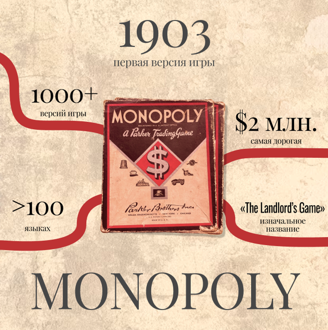 переходного времени стал ренессанс старых игр, которые ранее не могли быть опубликованы по идеологическим причинам. В 1990-е внезапно всплыли проекты 1930-х годов – те самые, что были признаны слишком «нежелательными» в сталинское время. Например, художник Владимир Голицын ещё в 1930-е придумал две приключенческие игры – «Пираты» и «Захват колоний», про морские сражения за сокровища. Тогда, при жизни автора, их не издали: вероятно, сочли тематику колониальных империй и пиратов идеологически чуждой. Но в 1990 году журнал «Пионер» напечатал описания и поля этих игр. Тогда, в эпоху дефицита, они произвели фурор среди любителей приключенческой литературы.
Именно в этот период родилась на отечественной почве и культовая «Мафия» – игра в психологический обман и дедукцию. Её придумал в 1986 году студент МГУ Дмитрий Давыдов на скучных ночных дежурствах в общежитии. Из университета по другим вузам, пионерским лагерям, армейским казармам. К концу 80-х «Мафия» стала известна по всей стране, а с начала 90-х вместе со студентами и эмигрантами попала за рубеж. За границей она обросла локальными версиями, но корни у этой всемирной забавы – именно в позднем СССР. Успех «Мафии» показывает, насколько стихийным и непредсказуемым был процесс распространения игр тогда: никакой индустрии толком не существовало, но хорошие идеи находили путь к народу сами, из уст в уста.
Контакт с Западом стал постоянным: на рынках можно было найти импортные игры (правда, очень дорогие). У многих даже не возникало мысли, что существуют настольные оригиналы этих миров. При этом внутри страны царила спонтанность: не было системы дистрибуции, крупных сетей магазинов или устоявшихся брендов. Рынок жил по своим законам, стихийно формируя тренды в отрыве от глобальных процессов.
В России всего этого почти не чувствовалось. Еврогеймы (то есть настольные стратегии с упором на экономику и минимумом случайности) к нам массово не дошли в 90-е. Зато отечественные издатели, не будучи в курсе мировых новинок, варили свою кашу. Выпускались десятки собственных игр, зачастую довольно примитивных по механике, но ярко оформленных. Подобный подход – делать настолку прежде всего детским развлечением – доминировал в России на протяжении 90-х. Это было отчасти наследием советского мировоззрения, отчасти отражало реальное положение дел: не существовало ещё массовой аудитории увлечённых взрослых игроков, которой можно было бы предложить сложные стратегии. Даже в США тогда только формировалась отдельная субкультура “board game geeks”, а у нас и подавно её не было – кроме узких тусовок и коллекционеров солдатиков.
К рубежу 2000-х российская настольная индустрия подошла с противоречивым багажом. С одной стороны, были налицо энтузиазм и творческий хаос 90-х: множество самодельных игр, клубы ролевиков и исторических реконструкторов, любительские переводы западных правил, первые коммерческие издательства (мелкие и нестабильные). С другой стороны, рынок оставался фрагментированным и незрелым: широкая публика все еще считала настолки детской забавой, а качественные иностранные игры были либо недоступны по цене, либо вообще неизвестны. Но ситуация стремительно менялась на фоне экономического роста начала 2000-х и всё большей открытости России миру. Грядет новая эра – эра современных настольных игр, когда русские игроки и издатели окончательно станут частью глобального сообщества.
Современность: рост российского
рынка, издательства, фестивали,
краудфандинг и разнообразие
2000-е годы ознаменовались сближением российского настольного мира с мировым как никогда раньше. Одним из важных факторов стало усиленное внимание к авторским правам: прямое копирование западных игр, процветавшее в 90-е, уже не проходило без последствий. Поэтому проще было договориться об официальной локализации, чем печатать пиратский клон. К тому же массовое распространение интернета и рост знания английского языка среди молодежи позволили нашим игрокам напрямую знакомиться с мировыми хитами и даже заказывать их из-за рубежа.
Российская настольная аудитория начала активно участвовать в международных онлайн-сообществах, читать отзывы, правила, делиться впечатлениями. Хобби переставало быть маргинальным – о нём заговорили в СМИ, по телевидению, в бизнес-кругах. На рубеже веков и в первые годы XXI столетия появляются новые издательские компании, которые ставят целью именно настольные игры. Так, компания «Смарт» (Москва) в начале 2000-х получила права на издание на русском языке целого ряда мировых бестселлеров. Среди них были «Колонизаторы», «Каркассон» (популярная игра о строительстве средневекового княжества), карточная юмористическая игра «Манчкин» и другие. Эти локализации стали первыми ласточками новой волны: российские любители наконец получили красивые, качественно изданные коробки с мировыми хитами на родном языке. Показательно, что даже специфический юмор «Манчкина», пародировавший стереотипы западных ролевых игр, не помешал игре стать популярной у нас – хотя многие российские игроки и не были знакомы с D&D.
Локализации сопровождались активным маркетингом: проводились презентации в магазинах, статьи в журналах, конкурсы для игроков. Параллельно начался подъём и в сфере настольных ролевых игр. Если в 90-е энтузиасты играли по любительским переводам D&D и другим системам неофициально, то в 2000-е вышли первые официальные книги правил на русском. Примерно с 2005 года российский рынок настолок вошёл в фазу бурного роста, который продолжается и сейчас. Произошла консолидация: ведущие локализаторы объединялись для укрепления позиций. Так, в 2010 году слиянием компаний «Смарт» и «Мир Фэнтези» образовался издательский холдинг Hobby World (Мир Хобби) – ныне крупнейший игрок отрасли.
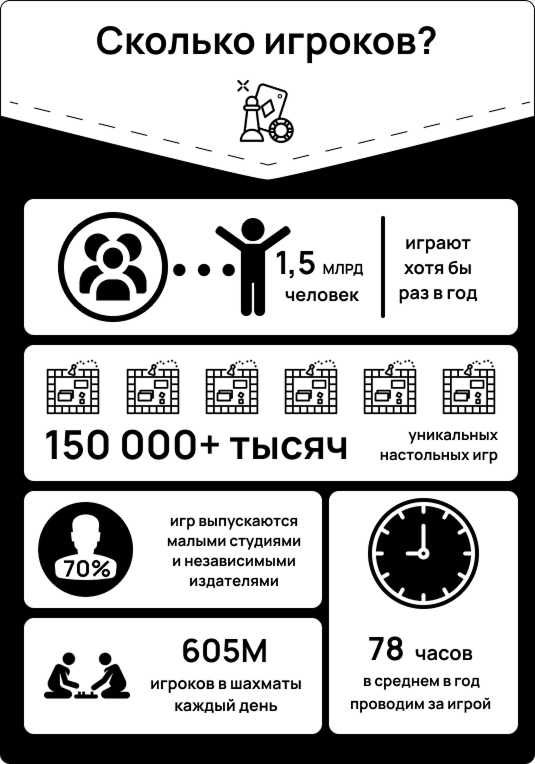 Такого уровня активности и сплочённости комьюнити не было никогда ранее – хобби, ещё пару десятилетий назад считавшееся причудой энтузиастов, превратилось в широко распространённое увлечение для самых разных людей. Отдельно стоит отметить роль цифровых технологий в современном этапе. Интернет не только объединил игроков, но и дал новые инструменты. Появились русскоязычные сайты-энциклопедии (например, Tesera.ru, BoardGameGeek на русском), YouTube-каналы с обзорами и летсплеями (Низа Гамс, Кубик в Кубе и другие), мобильные приложения-компаньоны к настольным играм. Кроме того, наши издатели и авторы активно используют краудфандинг для запуска проектов. Аналог Kickstarter – платформа CrowdRepublic (созданная при участии Hobby World) – позволяет привлекать средства от сообщества на издание новых игр. Многие смелые идеи отечественных авторов были реализованы именно через предзаказы заинтересованных игроков.
Жанровое разнообразие нынешнего рынка впечатляет. Есть всё: от лёгких пати-игр на компанию, до тяжёлых стратегий и еврогеймов. Любители военно-исторических игр найдут локальные игры про Великую Отечественную вроде «1418» или «Орша». Детективные и детективно-ролевые игры, кооперативные игры, коллекционные карточные – любой современный жанр представлен в магазинах. При этом формируется и свой взгляд: появляются игры, обыгрывающие конкретно российскую культуру и историю. К примеру, из недавних – «Смутное время», стратегическая игра отечественного автора о событиях начала XVII века, которая получила награды на фестивалях. По оценкам бизнес-изданий, к концу 2010-х объём российского рынка настолок достиг нескольких миллиардов рублей в год, а ежегодный рост исчислялся двузначными процентами. Во многих семьях теперь рядом с книгами на полке стоят коробки с «Манчкином», «Alias/Элиас» или «Дженгой», и выходные вечера провести за игрой – обычное дело. Игры воспринимаются как полезная альтернатива гаджетам: они развивают живое общение, мышление, английский язык. Для детей настолки рекомендованы педагогами как развитие логики и соцнавыков. Для компаний друзей – как способ весело провести время без алкоголя. Даже психологи используют некоторые настольные игры в тренингах и терапии.
Словом, аудитория расширилась от узкой группы энтузиастов до широких масс: сейчас среди любителей настолок можно встретить и школьников, и студентов, и бизнесменов, и пенсионеров. Кто-то предпочитает лёгкие семейные игры по вечерам с домочадцами, кто-то собирается с друзьями раз в неделю, чтобы “мозголомно” стратегически сразиться, кто-то ездит на фестивали, а кто-то коллекционирует редкие издания ради искусства.
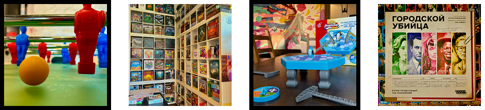
Заключение: настольные игры
как зеркало общества
Путь настольных игр в России отразил все изгибы нашей истории. Каждая эпоха вносила свои коррективы, превращая игры в зеркало культуры. В досоветские времена на столах российских семей соседствовали карточные азартные игры и нравоучительные викторины – отражение одновременно любви к развлечениям и стремления к просвещению. Советские настолки 1920–30-х – это уже откровенная пропаганда и воспитание: они прямо транслируют идеалы эпохи индустриализации, коллективизма, здорового быта. Позднее, когда идеология отступает, игры становятся отражением бытовых реалий: семья 60-х, мирно играющая в лото, – символ того самого стабильного быта хрущёвско-брежневской поры, когда людям хотелось спокойного домашнего счастья. Затем приходит буря перемен – и снова настольная игра мгновенно подхватывает веяния времени. Перестройка дала нам «Менеджера» и «Биржу» – то есть игры про капитализм и рынок, которые лишь несколько лет назад были табу. В них – жадность знаний о новых экономических отношениях, первый азарт предпринимательства. Мафия с её скрытыми ролями и необходимостью блестяще врать, чтобы выжить, тоже родом из конца 80-х – не случайно, ведь в обществе тогда резко возрос интерес к психологии, к детективным сюжетам, к идее «кто свой, кто чужой» на фоне социальных потрясений. Наконец, современный всплеск настольных игр – это тоже отражение настоящего времени. В быстром цифровом веке люди ощутили потребность в живом, «аналоговом» досуге – в том, чтобы собраться вместе за одним столом и отвлечься от экранов. Отсюда и нынешний расцвет – настольные игры предлагают то, чего не дают гаджеты: тактильные ощущения фишек и карт, непосредственный смех, взгляды, социализацию.
Настольные игры прошли долгий путь от простецкого «Гусёк» до сложнейших симуляций современных настольных хитов. Сегодня можно с уверенностью сказать, что настольная игра в России – больше не чужестранец и не детская забава, а неотъемлемая часть культуры досуга. В ней отражаются наши ценности, страхи, надежды, юмор и память о прошлом. Достаточно взглянуть на правила и оформление игры, чтобы понять, чем жило общество в тот момент. И, вероятно, так будет всегда: меняются технологии, уклад жизни, но люди по-прежнему любят собираться и играть. А значит, настольные игры продолжат служить зеркалом, в котором – пусть в игровом и порой гротескном виде – мы видим себя и своё время. Стоит только смелее пробовать новое, ведь среди множества современных проектов каждый найдёт себе что-то по душе.